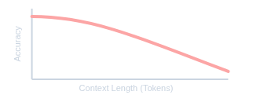
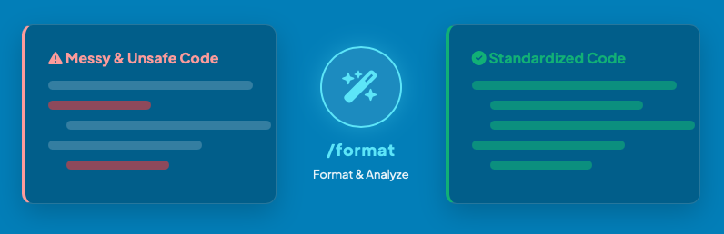
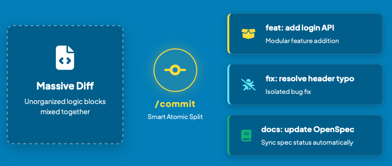
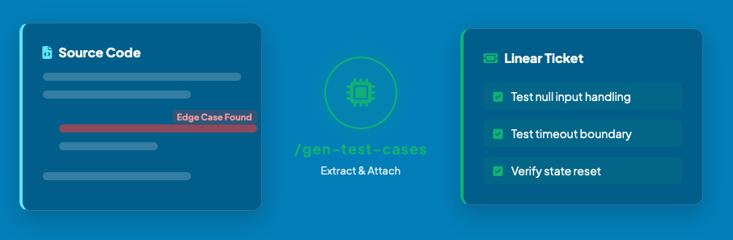
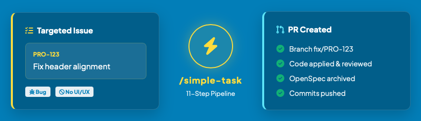

gogox-claude
從憑感覺寫到 production pipeline
gogox-claude
from vibes to a production pipeline
真實案例 — 一個 0→1 專案，用 AI workflow 把 Client App 的 iOS / Android migrate 到 Flutter A real 0→1 case — migrating the Client App's iOS / Android to Flutter with an AI workflow
五大段落 · 從體驗到原理到整合Five sections · from demo to fundamentals to pipeline
架構大圖 → 我的一天 → 基本觀念 → 整合 pipeline → 收結。 Big picture → a day with the agent → fundamentals → integrated pipeline → wrap-up.
架構大圖Big picture
一張圖看完整套 AI workflow 的層次與關係。 One diagram to see all the layers and how they connect.
- 高層抽象 top-down viewtop-down abstract view
先看一天A day with the agent
先 ground 再 demo · 看一個工作日跟 agent 跑的樣子。 Now that you have the map — here's what a workday with the agent looks like.
- 我的一天 with agenta day in the life
基本觀念Fundamentals
SDD / OpenSpec / MCP / Skills / Multi-Agent — pipeline 底下的核心觀念，前次 talk 詳述，這裡快速帶過。 SDD / OpenSpec / MCP / Skills / Multi-Agent — the core ideas under the pipeline. Covered in depth in the previous talk; we breeze through here.
- Vibe → SDD
- OpenSpec mechanics
- MCP & Skills
- Context Dilemma
整合 pipelineIntegrated pipeline
把零件組起來成一條 team-level 端到端 pipeline。 Composing the parts into one team-level end-to-end pipeline.
- Team-level sharing
- E2E ticket journey
- Skill catalog (appendix)
- Human × Machine
收結Wrap-up
30 天數字、實戰心得、每個人的角色升級與未來方向。 30-day numbers, field tips, how every role levels up & what's next.
- 30-day numbers
- Pro Tips · every role + What's Next
架構大圖Big picture
一張圖看完整套 AI workflow 的層次與關係。 One diagram to see every layer and how they connect.
架構大圖 · 系統像一台機器Architecture · the system as one machine
把整套系統當成一台機器：左邊餵進 Linear 上的票，右邊吐出可合併的 PR。中間是一支 AI agent 團隊在跑，人只在 ★ 判斷點把關。盒子裡一張票怎麼一步步走，§4 會把它打開。 Think of it as one machine: Linear tickets in on the left, merge-ready PRs out on the right. Inside, an AI agent team does the work — humans only stand at the ★ judgment gates. §4 opens the box to show how one ticket moves.
PREVIEWPREVIEW · 這張圖只是地圖，每一層在後面都會回到。 Just the map — every layer will be unpacked later.
我的一天 with agentA day with the agent
先看一個工作日跟 agent 一起跑長什麼樣。 Let's first see what a workday with the agent looks like.
快速 demo · 我的一天 with agent Quick demo · a day with the agent
先看一個工作日跟 agent 一起跑長什麼樣，後面再拆 framework 跟零件。 First a glimpse of what a workday with the agent looks like — then we'll zoom into the framework and the building blocks.
- 0:00整理 & 派工Prep & dispatch
- 0:34確認 AI 決策Check the AI's calls
- 0:43PR 自動出 + dev logPRs shipped + dev log
- 1:01每日自我 review → NotionDaily self-review → Notion
- 1:17半夜自動 code reviewOvernight auto review
- 1:47早上快速 catch upMorning catch-up
- 2:09真人 PR reviewHuman PR review
- 2:35修正 & 驗收Fix & verify
- 2:54準備下一輪Prep next round
基本觀念Fundamentals
SDD · OpenSpec · MCP · Skills · Multi-Agent — pipeline 底下的核心觀念。 SDD · OpenSpec · MCP · Skills · Multi-Agent — the core ideas under the pipeline.
Vibe Coding → SDD → OpenSpecVibe Coding → SDD → OpenSpec
想到什麼丟什麼——快、低門檻，但沒有 spec： Prompt whatever comes to mind — fast, low barrier, but with no spec:
- 🌀 Hallucinations — 編出不存在的 APIinvents APIs
- 🔥 Token Waste — 反覆試錯一直燒trial-and-error keeps burning
- 🧱 High Debt — 沒 spec，之後難維護no spec → hard to maintain
SDD：先寫 spec 當 SSOT、先共識再寫 code。OpenSpec 是落地工具，一張票跑完整個生命週期： SDD: write a spec as the SSOT, agree before coding. OpenSpec is the tool — one ticket runs the whole lifecycle:
proposal.md · WHAT & WHYdesign.md · HOW · architecture / APItasks.md · step-by-step checklistMCP + Claude SkillsMCP + Claude Skills
MCP 是 agent 的手（伸出去連外部世界），Skills 是肌肉記憶（把重複動作打包成一個指令）——一個對外、一個對內。 MCP is the agent's hands (reaching out to the outside world); Skills are muscle memory (repeat moves packed into one command) — one outward, one inward.
📡 MCP — live external context
Linear
抓 issue 細節、驗收條件、歷史脈絡，秒開 dev 任務。 Fetch issue details, ACs, and history — start dev tasks instantly.
Jira
同步 agile board、bug tracking、PR 自動更新狀態。 Sync agile boards, bug tracking, auto-update ticket status on PR.
Figma
直接讀 UI/UX 設計規格、版型、文案。 Inspect UI/UX specs, layouts, and copy directly.
Notion
取出 PRD、API 規範、公司知識庫，對齊業務規則。 Retrieve PRDs, API specs, and the knowledge base.
⚡ Skills — repeatable dev workflow
Anthropic 官方定義：「Skills 是資料夾，裡面打包了 instructions、scripts、resources，Claude 在需要時才載入。」MCP 帶來外部即時 context，Skills 則把可重複的 dev 動作封裝成可呼叫的能力——左右手互補。 Per Anthropic: "Skills are folders that include instructions, scripts, and resources that Claude can load when needed." MCP brings in live external context; Skills wrap repeatable dev actions into callable capabilities — the two complement each other.
~/.claude/skills/ └── /commit/ ├── SKILL.md # name + when-to-use ├── scripts/ # executable helpers └── resources/ # prompts, templates
- Composable · Claude 自動挑相關 skill 疊用Claude stacks relevant skills automatically
- Portable · 同一份格式跑遍 apps / Code / APIsame format across apps / Code / API
- Efficient · on-demand 載入，不污染 contexton-demand load — keeps context clean
- Executable · 可內含 code，比 token 生成更可靠can include code — more reliable than token gen
source · claude.com/blog/skills
The Context DilemmaThe Context Dilemma
一個常見誤解：context 餵越多越聰明。其實相反——一過門檻，accuracy 就掉。 A common myth: more context = smarter. The opposite is true — past a threshold, accuracy drops.
Higher Context = Lower Accuracy

長對話會讓 LLM 失焦、忽略指令、產生幻覺。 Long dialogues cause LLMs to lose focus, ignore instructions, and hallucinate.
Refs · RULER (Hsieh+, NVIDIA '24) · Long-Context Hallucination Detection (Huang+, NAACL '25)
從亂到乾淨 · 三種做法Messy → clean · three approaches
結論:把 context 拆乾淨，讓每個 sub-agent 都拿著一份小而完整的 context 獨立作業——這就是 AI 穩定產出的關鍵。 Bottom line: split context cleanly so each sub-agent works independently on its own small, complete slice — that's the key to reliable AI output.
整合 pipelineIntegrated pipeline
把零件組起來成一條 team-level 端到端 pipeline。 Composing the parts into one team-level end-to-end pipeline.
Why team-level · 三層 skill sharing Why team-level · three levels of skill sharing
從個人到團隊，每一層解決上一層留下的痛點。 From solo to team — each level solves what the one before couldn't.
- ✨ 一個人改進 skill → 整個 team 立即受益。One person improves a skill → the whole team benefits instantly.
- ✨ 同一套 pipeline + 同一套 quality bar 跨 project 統一守。Same pipeline + same quality bar enforced across every project.
- ✨ knowledge 在 repo 裡持續 compound，不靠個別發揮。Knowledge compounds in the repo — output stops depending on individual heroics.
Overview · 一張票完整旅程 Overview · end-to-end ticket journey
9 個 atomic stage、4 個 dev human gate、6 個 core skill——pipeline 自動跑，這四步保留真人把關。 9 atomic stages, 4 dev human gates, 6 core skills — pipeline runs itself, four steps keep humans in the loop.
⚠ E2E 圖未載入——請直接開 assets/shared/e2e-overview.html，或看備用靜態截圖。
E2E overview didn't load — open assets/shared/e2e-overview.html directly, or use the static screenshot fallback.
人 × 機器：誰該做什麼 Human × Machine: who does what
這條 pipeline 不是把人趕走，而是讓人只做判斷題。 The pipeline isn't here to remove humans — it frees them for judgment calls only.
- spec 生成 → 逐項實作spec generation → implementation
- 跑測試 · 凌晨自動 code reviewrunning tests · nightly auto code-review
- 開 PR · 派工平行化（N 張票同時跑）opening PRs · parallel dispatch (N tickets at once)
- worktree 建立與管理spinning up & managing worktrees
- ★ 票卡品質Ticket quality — garbage in, garbage outgarbage in, garbage out
- ★ spec 對齊Spec alignment — override AI 列出的假設override the AI's stated assumptions
- ★ code 修補Code fixes — 微調 AI shipped 的 PRfine-tune the PR the AI shipped
- ★ 最終 reviewFinal review — approve 才 shipapprove before it ships
Workflow & Skills Workflow & Skills
點 Part 標題展開細節。Part A 是 Overview 上的 6 個 core skill；Part B 是組成 pipeline 的工具型 skill；Part C 是任何專案都能用的通用型 skill。 Click a Part to expand. Part A lists the six core skills from Overview; Part B holds the utility skills that build the pipeline; Part C contains universal skills any project can use.
PART A Pipeline 與架構Pipeline & architecture Overview 上的 6 個 core skill · 詳細介紹見 Part 3the 6 core skills from Overview — see Part 3 for details ▼
索引型清單 · 完整描述與深入頁在 Part 3。 Index only — full descriptions and deep-dives live in Part 3.
PART B 工具型 skillsUtility skills 沒有獨立 slide，但 pipeline 都靠它們組裝no dedicated slides, but the pipeline is built out of them ▼

/format ·
守門員 — commit 前自動 format / fix lint / 跑 static analyzer。
The gatekeeper — auto-format, fix lint, run analyzer before commit.

/commit ·
把巨大 diff 拆成邏輯化、可追溯的 Conventional Commits。
Splits massive diffs into logical, traceable Conventional Commits.

/generate-test-cases ·
找出 edge case，自動寫回 Linear ticket。
Identifies edge cases and writes them back to the Linear ticket.

/simple-task ·
為描述清楚的小 ticket 設計的快速通道，從 issue 到 PR 一條龍。
Fast-track for well-described small tickets — issue to PR in one shot.
/dev:ship 與 /port:ship 收尾時都會呼叫它。
Open or update a PR. Both /dev:ship and /port:ship call this at the end.
PART C 通用型 skillsUniversal skills 不綁 repo / pipeline，任何專案都能用repo-agnostic · no pipeline coupling ▼
這些 skill 跟 pipeline 沒有相依，任何專案 / 任何 Claude Code 使用者都能拿來用。 These skills have no dependency on the pipeline — any project, any Claude Code user can use them.
/daily-summary + /monthly-summary
讓 Claude Code 自己回頭看你每天、每月做了什麼，自動整理進 Notion。零 hook 設定，直接 scan transcripts。 Let Claude Code look back at what you did each day and month, auto-organized into Notion. Zero hook setup — it scans transcripts directly.
→ summary-skills.html 08 UNIVERSAL/session-metrics
把當前 session 的 cost / cache hit / turn / 時間 vs SP estimate 算清楚，AI 摘要後貼到 Linear。 Calculate the current session's cost / cache hit / turn count / time-vs-SP, summarize via AI, post to Linear.
→ session-metrics.html收結Wrap-up
實戰心得、30 天數字、未來方向、心態轉變。 Field tips, 30-day numbers, what's next, and the mindset shift.
30 天成果數字30-day numbers
2026-04-16 → 2026-05-16，3 位工程師 × 1 套 AI workflow，把產出量化下來。 2026-04-16 → 2026-05-16 · 3 engineers running one AI workflow, with the output quantified.
AI Workflow · 30 天成果 AI Workflow · 30-day numbers
Session-metrics 個人取樣作為團隊樣本 3 engineers / 1 AI workflow
session-metrics individual sample as team proxy
平均 每 1.6 工作日 落地一個重磅 feature Each PR 3,000+ lines
~one heavy feature every 1.6 workdays
Pro Tips & What's Next Pro Tips & What's Next
這陣子用下來的觀察。 What I've learned running this in production.
別追求 100% 自動化Don't chase 100% automation
第一步錯就一路 cascade。設幾層 2–5 分鐘的 human review，把錯誤攔在便宜的地方。 Errors cascade from step 1. A few 2–5 min review gates catch them while they're cheap.
Cache 成本是隱形殺手Cache cost is the silent killer
不開 cache：多輪重送，token 近平方成長。開了 cache：read 省 ~90%，但 TTL 只有 5 分鐘——idle 過了要重付一次寫入。拆 session、用 sub-agent 隔離、做到一半別離開。 No caching: multi-turn resends grow tokens ~quadratically. With caching: reads drop ~90%, but the 5-min TTL means idling forces a re-write. Split sessions, isolate via sub-agents, don't idle mid-task.
流程本身也要持續優化Keep optimizing the workflow itself
先用 /session-metrics 量出哪裡在燒 token，再對症下藥：雜事交給 sonnet/haiku、重複指令包成 skill。
Measure where tokens burn with /session-metrics, then fix it: hand chores to sonnet/haiku, wrap repeat prompts into skills.
把重複行為變成 skill，再拼成 workflowTurn repeat behaviors into skills, then a workflow
skill 越小越好、好維護，再把這些 atomic skills 組成 workflow——讓人工 SOP 變成 agentic workflow。 Keep each skill tiny & maintainable, then compose them into a workflow — turning a human SOP into an agentic workflow.
Q & A
有什麼想問的？ What's on your mind?